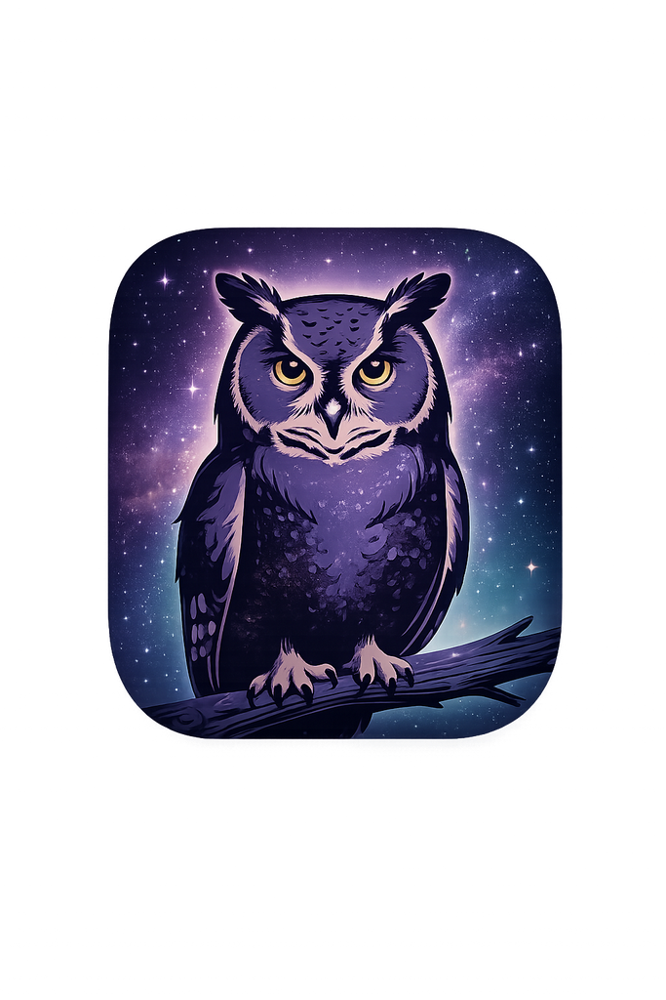

Aurore des Mots
Des mots pour te réveiller.
Des silences pour t’apaiser.
Une présence douce, chaque jour.
✨ Texte du moment
Nouveau texte
Écouter
✨ Citations inspirantes
Nouvelle citation
Écouter
🌙 Poèmes du cœur
Nouveau poème
Écouter